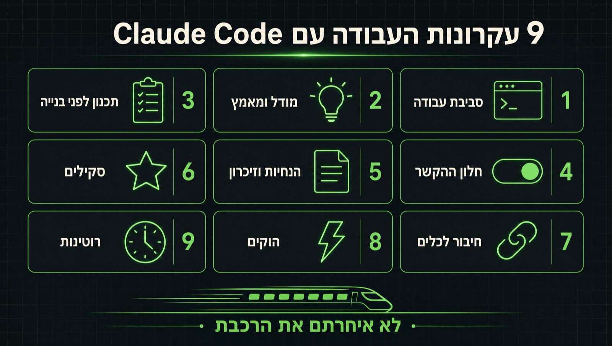

למי הדף הזה, ומה תדעו בסופו
לאחרונה אני פוגש לא מעט אנשים שמרגישים שהם איחרו את הרכבת עם Claude Code ונשארו מאחור. אז קודם כל, אנחנו בישראל. התחבורה הציבורית פה לא משהו :)
הדף הזה מלווה את הסרטון ועובר על כל מה שצריך לדעת כדי לעבוד עם Claude Code. הרעיון פשוט: כל עוד אתם יודעים להסביר לעצמכם ולקלוד מה אתם מנסים להשיג, ממש לא איחרתם שום דבר. כל השאר הוא תשתית, ואת התשתית הזו תכירו כאן.
הדף בנוי מתשעה עקרונות. כל עקרון מקבל סעיף משלו: הסבר קצר בשפה פשוטה, קופסת "מה עושים בפועל" עם צעדים מעשיים, ולפעמים גם "שימו לב" עם דברים שכדאי להיזהר מהם. אפשר לקרוא מההתחלה עד הסוף, או לקפוץ ישר לעקרון שמעניין אתכם דרך תוכן העניינים.
מילה אחת לפני שמתחילים: Claude Code הוא סוכן קוד של חברת Anthropic. הוא לא רק כותב קוד, הוא יכול לחקור, לקרוא ולערוך קבצים, להריץ פקודות, להתחבר לכלים שלכם ולבצע משימות שלמות מקצה לקצה. הדף מתאים גם למי שאף פעם לא כתב שורת קוד.
תשעת העקרונות
לחצו על עקרון כדי לקפוץ אליו.
איפה עובדים עם Claude Code
Claude Code הוא אותו כלי בכל מקום. יש שלוש דרכים להפעיל אותו, ואתם בוחרים את זו שנוחה לכם.
הדבר הראשון שכדאי להבין הוא שאין "מקום נכון" לעבוד בו. אחרי שמתקינים את Claude Code במחשב (קישור להתקנה בסוף הדף), אפשר לעבוד איתו בשלוש דרכים שונות. בכולן זה אותו קלוד, עם אותן יכולות, אותם קבצים ואותו זיכרון. ההבדל הוא רק בממשק.
דרך 1טרמינל
חלון שורת הפקודה של המחשב. מקלידים claude ומתחילים לדבר איתו. הכי מהיר, הכי "נקי", ומתאים למי שמרגיש בנוח עם טקסט.
דרך 2אפליקציית שולחן העבודה
אפליקציה של Claude למחשב. יש בה מצב צ'אט שעובד בענן, מצב Cowork שעובד על קבצים במחשב שלכם, ומצב Claude Code. הכי נוחה למי שלא רגיל לטרמינל.
דרך 3סביבת פיתוח (IDE)
תוסף לתוכנות כמו VS Code, Cursor או Antigravity. קלוד יושב בתוך העורך, רואה את הקבצים שפתוחים לכם ומציע שינויים ישירות בקוד.
מה עושים בפועל
- מתקינים את Claude Code פעם אחת לפי ההוראות של Anthropic.
- לא מתכנתים? התחילו מאפליקציית שולחן העבודה. היא הכי ידידותית.
- מתכנתים? נסו את התוסף לסביבת הפיתוח שלכם, ואת הטרמינל למשימות מהירות.
- בטרמינל, שתי פקודות בסיסיות מספיקות להתמצאות:
cd(מעבר לתיקייה) ו-ls(רשימת הקבצים בתיקייה).
איזה מודל ואיזו רמת מאמץ לכל משימה
מודל חזק יותר ומאמץ גבוה יותר לא תמיד שווים תוצאה טובה יותר. הם כמעט תמיד שווים יותר כסף ויותר זמן.
המודלים
נכון להיום יש ב-Claude ארבעה מודלים. גם אם יתווספו מודלים חדשים, הרעיון לא משתנה: יש מודל קטן ומהיר, מודל מאוזן לעבודה השוטפת, ומודלים חזקים לחשיבה עמוקה. המחירים בטבלה הם לכל מיליון טוקנים (על טוקנים נדבר בעקרון 4), קלט ופלט.
גללו את הטבלה הצידה כדי לראות את כל העמודות ←
| מודל | מה הוא | למה הוא טוב | מחיר (קלט / פלט) | חלון הקשר |
|---|---|---|---|---|
| Haiku 4.5 | הקטן, המהיר והזול ביותר | מענה על שאלות, סיווג, תת-משימות של סוכני עזר. משימות שלא צריכות הרבה כוח חישוב. | $1 / $5 | 200K |
| Sonnet 5 | סוס העבודה של Claude Code | רוב העבודה השוטפת: כתיבת קוד, חיפוש מידע, ניסוח טקסטים. מהיר, ובדרך כלל בדיוק מה שצריך לביצוע. | $2 / $10 | 1M |
| Opus 5 | חשיבה עמוקה יותר | תכנון אפליקציות וכלים, פתרון בעיות קשות. לא צורך יותר טוקנים מ-Sonnet, אבל כל טוקן עולה פי שניים וחצי. | $5 / $25 | 1M |
| Fable 5.1 | מודל הדגל, הכי חזק שזמין לכולם | משימות מורכבות וארוכות: סקירת מערכות שלמות, איתור בעיות באיך שהן עובדות, שינויים גדולים בקוד. החשיבה שלו תמיד דולקת. | $10 / $50 | 1M |
חשוב להבין: כל ארבעת המודלים יודעים "לחשוב" לפני שהם עונים, כלומר לפרק בעיה למרכיבים לפני שהם פותרים אותה. מה שמבדיל את Opus ו-Fable הוא העומק והאיכות של החשיבה הזו.
אגב, ל-Fable יש אח תאום בשם Mythos: אותו מודל בדיוק, בלי מגבלות הבטיחות בתחום הסייבר, וזמין רק לארגונים מאושרים. אז אם שמעתם על קלוד שמאתר פרצות אבטחה, זה Mythos ולא Fable.
רמת המאמץ
בכל מודל אפשר לקבוע רמת מאמץ. ככל שהמאמץ גבוה יותר, המודל חושב יותר זמן, מוציא יותר טוקנים על החשיבה, ובדרך כלל מגיע לתוצאה טובה יותר. אבל לא תמיד: לפעמים ההבדל באיכות ממש קטן, והעלות הגבוהה פשוט לא משתלמת.
ברירת המחדל של Claude Code היא xhigh. ההבדל באיכות בינה לבין max בדרך כלל קטן. ההבדל בזמן ובטוקנים לא.
שימו לב
- רמת המאמץ שולטת רק בכמה זמן קלוד חושב וכמה טוקנים הוא מוציא על זה. היא לא מפעילה סוכנים.
- סוכנים שעובדים במקביל הם פיצ'ר נפרד שאתם מפעילים במפורש. כל סוכן כזה עובד בחלון הקשר משלו ומחזיר לכם רק סיכום, כך שהם דווקא שומרים על החלון הראשי שלכם נקי.
כלל אצבע
תכנוןOpus או Fable, מאמץ בינוני עד גבוה
כשאתם מתחילים תהליך מורכב שדורש חשיבה מעמיקה, וההחלטות בתחילת הדרך ישפיעו מאוד על ההמשך. כאן משלמים על חשיבה טובה.
ביצועאותו מודל במאמץ נמוך, או Sonnet
כשכבר תכננתם וחשבתם על הכל, והמודל רק מוציא לפועל. כאן אפשר להוריד מאמץ או לעבור למודל קטן וזול יותר.
מה עושים בפועל
- לשאלות, סיווגים ומשימות קטנות: Haiku.
- לעבודה שוטפת ולביצוע של תוכנית קיימת: Sonnet.
- לתכנון, ארכיטקטורה ובעיות קשות: Opus או Fable.
- לא מעלים את המאמץ ל-
maxבלי סיבה טובה. ברירת המחדל מספיקה כמעט תמיד. - רוצים להשוות בין מודלים? יש קישור לאתר השוואה בסוף הדף.
קודם מתכננים, אחר כך בונים
אם אתם הולכים לבנות משהו, תתחילו במצב Plan. שם קלוד לא בונה כלום, הוא חוקר ושואל.
אפליקציה, מצגת, אתר, או כל דבר אחר: לפני שקלוד מתחיל לבנות, כדאי לעבור למצב Plan. במצב הזה קלוד לא נוגע בשום קובץ. הוא חוקר, מחפש מקורות, בודק מה כבר קיים ושואל אתכם שאלות הבהרה. רק אחרי שאתם מאשרים את התוכנית, הוא עובר לביצוע.
למה זה חשוב? משתי סיבות. הראשונה היא כסף: את התכנון עושים עם מודל מתקדם, וכשעוברים ליישום אפשר לעבור למודל זול יותר. השנייה היא איכות: כשמתכננים קודם, יש הרבה פחות סיכוי לפספס משהו שתיתקלו בו רק באמצע העבודה.
חמישה דגשים לשלב התכנון
- תנו לקלוד לעשות מחקר. אם אתם עדיין לא סגורים על הפרויקט, בקשו ממנו להביא תובנות, למשל מה מתחרים עושים.
- נסחו את המטרה הסופית. לא "תבנה לי טופס" אלא "אני רוצה שלקוחות יוכלו להירשם בפחות מדקה מהטלפון".
- תנו דוגמאות וקבצים. דברים שאהבתם, דברים שלא אהבתם, וכל קובץ רלוונטי שכבר יש לכם.
- בקשו ממנו לא להניח הנחות. שישאל שאלות הבהרה על כל מה שלא ברור לו.
- בקשו ממנו לאתר נקודות עיוורון. דברים שאתם לא יודעים שאתם לא יודעים.
וזה בעצם כל הסוד. אם תעשו את חמשת הדברים האלה, אתם יכולים לשכוח מכל אינסוף הקורסים של "הנדסת פרומפטים", "הנדסת הקשר" או איך שקוראים לזה עכשיו. הוסמכתם.
הזיכרון לטווח קצר של קלוד, ולמה הוא מתמלא
לקלוד יש זיכרון עבודה מוגבל. ככל שהוא מלא יותר, התוצאות פחות טובות והעלות גבוהה יותר. לומדים לנקות אותו.
מה זה טוקן
טוקן הוא הדרך של קלוד להבין טקסט. הוא מפרק כל טקסט ליחידות קטנות, וכל יחידה כזו עולה כסף. באנגלית, מילה אחת היא בערך טוקן וקצת. בעברית, מילה אחת היא בין 2 ל-4 טוקנים. כלומר, עברית יקרה יותר.
מה זה חלון ההקשר
הטוקנים האלה נכנסים לחלון ההקשר. תחשבו עליו כמו הזיכרון לטווח קצר של קלוד: כל מה שהוא "מחזיק בראש" בזמן שהוא עובד על משימה. לחלון הזה יש מגבלה. מעל כמות מסוימת של טוקנים, קלוד מתחיל לשכוח דברים או לתת תוצאות פחות טובות. זו הסיבה שחשוב להבין מה נכנס בו ואיך מנהלים אותו.
מה שמפתיע הרבה אנשים: חלון ההקשר מתמלא עוד לפני שכתבתם מילה. בכל הודעה ששולחים לקלוד מצטרפים אליה דברים שלא אתם כתבתם:
פרומפט המערכת
הנחיות של Anthropic שגורמות לקלוד לעבוד כמו שהם תכננו.
הנחיות וזיכרון
קובץ ההנחיות שלכם והזיכרון של הפרויקט נטענים עם כל הודעה (עקרון 5).
הגדרות כלים
כל כלי וחיבור שמחוברים לקלוד תופסים מקום, גם אם לא השתמשתם בהם (עקרון 7).
ביחד, הדברים האלה תופסים בין 5 ל-15 אחוז מחלון ההקשר עוד לפני ההודעה הראשונה שלכם, תלוי כמה כלים וזיכרון מחוברים לכם.
למה זה חשוב? כי יותר טוקנים זה יותר כסף, וגם כי ככל שתופסים יותר מקום בחלון, איכות התוצאה יורדת.
מה עושים בפועל
- בודקים כמה מהחלון מנוצל. באפליקציה לוחצים על הגרף הקטן בצד, בטרמינל מקלידים
/context. - כלל האצבע שלי: כשמגיעים לגג 70 אחוז ניצול, מנקים ומתחילים סשן חדש. Anthropic ממליצה לנקות בין משימות, ויש גם ניקוי אוטומטי כשמתקרבים לגבול.
/clearמנקה את החלון לגמרי. מתאים כשסיימתם משימה ומתחילים משימה חדשה./compactמבקש מקלוד ליצור גרסה מקוצרת של השיחה, רק עם הדברים החשובים. מתאים כשעדיין באמצע משימה ארוכה.- מנתקים כלים וחיבורים שלא משתמשים בהם (עקרון 7), ושומרים על קובץ ההנחיות קצר (עקרון 5).
רוצים להעמיק?
יש לי שתי כתבות בבלוג על הנושא: אחת על טוקנים ואיך הם משפיעים על מודלי שפה, ואחת על ניהול חלון ההקשר ב-Claude Code. הקישורים בסוף הדף.
מה קלוד יודע עליכם בכל סשן
יש קובץ הנחיות שאתם כותבים לקלוד, ויש זיכרון שקלוד כותב לעצמו. שניהם נטענים בכל סשן, ולכן שניהם צריכים להישאר קצרים.
קובץ ההנחיות: CLAUDE.md
מדובר בקובץ טקסט פשוט (בפורמט markdown) בשם CLAUDE.md. הוא מכיל הנחיות לקלוד, ובכל סשן שאתם פותחים הוא נטען פעם אחת לחלון ההקשר ונשאר שם לאורך כל השיחה.
למשל, אם אתם רוצים שקלוד יענה לכם קצר ולעניין, מוסיפים את ההנחיה הזו לקובץ. מאותו רגע, בכל סשן, קלוד יענה קצר ולעניין.
אבל זכרו: הקובץ נטען בכל סשן, ולכן הוא חייב להיות תמציתי ולהכיל רק הנחיות שקלוד חייב להכיר תמיד. אחרת הוא תופס מקום מיותר בחלון ההקשר. Anthropic ממליצה על פחות מ-200 שורות. קובץ ארוך מדי הוא לא רק בזבזני, קלוד גם מתחיל להתעלם מחלק מההנחיות שבו.
הזיכרון האוטומטי: MEMORY.md
כמו שלקלוד יש קובץ הנחיות שאתם כותבים, יש לו גם זיכרון שהוא כותב לעצמו. תוך כדי העבודה הוא שומר שם דברים שלמד עליכם: תיקונים שנתתם לו, העדפות, מי אתם, והקשר על הפרויקט שהוא לא יכול להסיק מהקוד. קובץ האינדקס של הזיכרון נקרא MEMORY.md.
גם הוא נטען בכל סשן (200 השורות הראשונות שלו). הפירוט נשמר בקבצים נפרדים שקלוד קורא רק כשהוא צריך. אז כמו קובץ ההנחיות, כדאי שגם הוא יישאר קצר ויעיל. רואים ועורכים את כל הקבצים האלה עם הפקודה /memory.
שתי רמות: גלובלי ופרויקט
מה קורה אם צריך הנחיות שונות לפרויקטים שונים? קובץ CLAUDE.md קיים בשתי רמות. שני הקבצים נטענים יחד בתחילת הסשן, קודם הגלובלי ואחריו של הפרויקט. הזיכרון האוטומטי, לעומת זאת, הוא תמיד ברמת הפרויקט: לכל פרויקט תיקיית זיכרון משלו.
רמה גלובליתקובץ אחד בתיקיית הבית
נטען בכל פרויקט ובכל סשן. שמים בו מה שנכון לכם תמיד: סגנון תשובה, שפה, כלים שאתם אוהבים.
רמת פרויקטקובץ בתוך תיקיית הפרויקט
נטען רק כשעובדים על הפרויקט הזה. שמים בו מה שנכון רק לו: פקודות הרצה ובדיקות, מבנה התיקיות, מוסכמות של הצוות.
ומה שלא צריך בכל סשן, למשל תהליך עבודה שלם, לא שמים באף אחד מהם. את זה הופכים לסקיל, ועל זה נדבר בעקרון הבא.
מה עושים בפועל
/initיוצר קובץCLAUDE.mdהתחלתי לפרויקט. אם כבר יש אחד, הוא מציע שיפורים./doctorבודק את ההתקנה, וכשישCLAUDE.mdבפרויקט הוא גם מציע מה למחוק ממנו: בעיקר דברים שקלוד יכול להסיק לבד מהקוד, כמו מבנה תיקיות ורשימות ספריות./memoryפותח את קבצי הזיכרון לצפייה ולעריכה.- שומרים על שני הקבצים קצרים. אם משהו לא נדרש בכל סשן, הוא לא שייך לשם.
- רוצים לדעת מה כדאי לשים בכל קובץ? Anthropic מפרסמת מדריך best practices. הקישור בסוף הדף.
מלמדים את קלוד איך אתם רוצים שדברים ייעשו
סקיל הוא הדרך ללמד את קלוד לבצע משימה מסוימת בצורה מסוימת, ולקבל תוצאות עקביות בכל פעם.
זה אחד הדברים הכי משמעותיים ב-Claude Code. בכל פעם שאתם יוצרים סקיל, אתם בעצם מלמדים את קלוד איך אתם רוצים שהוא יבצע משימה: אילו תהליכים להריץ, על מה לשים לב, ואיך להגיש את התוצאה. אשתמש בקלישאה השחוקה: זה ממש כמו שניאו לומד קונג-פו במטריקס.
מה זה בפועל
סקיל הוא תיקייה עם קובץ הנחיות אחד בשם SKILL.md, ולפעמים גם קבצים נלווים: דוגמאות, תבניות וסקריפטים. בפועל זה פרומפט גדול עם הנחיות, דוגמאות והסבר איך לבצע משהו. במקום להעתיק אותו כל פעם מחדש, שומרים אותו פעם אחת ומפעילים כשצריך. או שקלוד מפעיל אותו לבד כשהוא מזהה שזה רלוונטי.
ההבדל החשוב מקובץ ההנחיות: סקיל נטען לחלון ההקשר רק כשמשתמשים בו. לכן הוא יכול להיות ארוך ומפורט בלי שזה יעלה לכם בכל סשן.
דוגמה
כשבונים אתרים עם קלוד, הרבה פעמים מקבלים עיצוב גנרי וממוצע, כזה שחוזר על עצמו וכבר ראינו במיליון מקומות. זה לא במקרה: מודל שפה הוא מודל סטטיסטי, והוא נותן את הממוצע. אם רוצים ללמד את קלוד ליצור אתרים יפים יותר, צריך לחנוך אותו: להראות לו דוגמאות טובות ורעות, לתת לו גישה לספריות עיצוב, ללמד אותו עיצוב וחוויית משתמש. בדיוק כאן סקילים נכנסים לתמונה. למשל הסקיל impeccable: ברגע שמתקינים אותו, קלוד מקבל סט של פקודות ודוגמאות לדרך הנכונה לעצב חלקים באתר.
שלוש דרכים ליצור סקיל
דרך 1התוסף skill-creator
מתקינים את התוסף הרשמי של Anthropic בפקודה אחת, מסבירים לקלוד מה הסקיל צריך לעשות, והוא יוצר אותו ואפילו מריץ עליו בדיקות.
דרך 2מתוך שיחה מוצלחת
עובדים עם קלוד, מדייקים ומשפרים עד שמגיעים לתוצאה טובה. ואז מבקשים ממנו לנתח את השיחה לאחור וליצור ממנה סקיל.
דרך 3סקילים קיימים
מתקינים מחנויות התוספים עם /plugin, או פשוט מעתיקים תיקיית סקיל לתיקיית הסקילים שלכם.
הפקודה להתקנת התוסף:
/plugin install skill-creator@claude-plugins-official
שימו לב: סקיל הוא לא רק טקסט
- סקיל יכול להכיל סקריפטים שרצים על המחשב שלכם, והוא יכול להגדיר לעצמו הרשאות לכלים בלי שתאשרו כל פעולה. סקיל זדוני יכול לעשות במחשב שלכם דברים שלא התכוונתם.
- בחרו סקילים ממקורות מוכרים, למשל חנות התוספים הרשמית של Anthropic.
- מתקינים סקיל פחות מוכר? קראו קודם את
SKILL.mdואת הסקריפטים שלו, או בקשו מקלוד לסרוק אותו לפני שאתם מפעילים.
סקילים כאוטומציה
סקילים יכולים להיות גם הדרך לבצע תהליכים אוטומטיים. למשל: סקיל שבודק מקורות מידע, אוסף חדשות, מסיר כפילויות, מנתח, מוסיף תובנות שרלוונטיות אליי ושולח את התוצאה במייל. שימו לב שהסקיל עצמו לא רץ לבד, הוא רק מגדיר את התהליך. כדי שזה יקרה כל כמה ימים מחברים אותו למשימה מתוזמנת (עקרון 9). במקום להסביר את זה לקלוד כל פעם מחדש, עושים את זה פעם אחת, מבקשים ממנו להפוך את זה לסקיל, ומתזמנים.
מה עושים בפועל
- זיהיתם משימה שחוזרת על עצמה ושאתם רוצים שתיעשה בצורה מסוימת? זה מועמד לסקיל.
- מתקינים את skill-creator ומבקשים מקלוד לבנות את הסקיל, או הופכים שיחה מוצלחת לסקיל.
- לפני התקנת סקיל של מישהו אחר, קוראים מה יש בו.
- תהליך עבודה שלם? לא שמים אותו ב-
CLAUDE.md. הופכים אותו לסקיל.
מחברים את קלוד לכלים שלכם
קלוד יכול לעבוד עם Gmail, יומן, Drive ועוד. יש שלוש דרכים לחבר אותו, מהפשוטה ועד הכי חסכונית.
דרך 1קונקטורים (Connectors)
לרוב הכלים המוכרים (Gmail, Google Calendar, Google Drive, Canva ועוד) יש קונקטור מובנה. מפעילים אותו באתר של Claude, בהגדרות תחת Connectors, ומאותו רגע הוא זמין גם ב-Claude Code אוטומטית.
דרך 2שרת MCP
מאחורי הקלעים, קונקטור הוא שרת MCP, פרוטוקול פתוח לתקשורת בין כלי AI לכלים אחרים. לא מצאתם קונקטור מובנה? כמעט כל כלי אפשר לחבר ישירות, בלי לכתוב קוד: הכלי מפרסם שרת MCP, ואתם מוסיפים אותו לקלוד.
דרך 3כלי שורת פקודה (CLI)
הרבה שירותים מגיעים עם כלי שורת פקודה, למשל gh של GitHub, וקלוד כבר יודע להשתמש בהם. לפי Anthropic זו הדרך הכי חסכונית בחלון ההקשר, כי היא לא טוענת הגדרות כלים מראש.
דוגמה: אם אני רוצה לחבר את קלוד לשירות בשם Firecrawl, שיודע לחלץ מידע מאתרים, אני ניגש לאתר שלהם, לוקח את כתובת ה-MCP ומוסיף אותה ב-Claude Code בפקודה אחת: claude mcp add והכתובת של השרת, או דרך /mcp. מהרגע הזה קלוד יכול להפעיל את Firecrawl בעצמו.
שימו לב
- הקונקטורים מהאתר עובדים רק כשאתם מחוברים ל-Claude Code עם החשבון של claude.ai, לא עם מפתח API.
- כל שרת מחובר תופס מקום בחלון ההקשר, גם אם לא השתמשתם בו (עקרון 4).
מה עושים בפועל
- כשמתחילים פרויקט, אחרי שהסברתם לקלוד מה המטרה, שאלו אותו אילו חיבורים יכולים להיות רלוונטיים.
- מחפשים קודם קונקטור מובנה, אחר כך שרת MCP, ואם יש כלי שורת פקודה, מעדיפים אותו.
- לא משאירים עשרות שרתים מחוברים שלא משתמשים בהם. מכבים אותם ב-
/mcp.
פעולות שתמיד קורות
הוק הוא פקודה שרצה אוטומטית כל פעם שקורה משהו בתוך Claude Code. הנחיה קלוד יכול לפספס. הוק תמיד רץ.
ברמה הכי פשוטה, הוק (Hook) הוא פקודה שמופעלת אוטומטית כשקורה אירוע מסוים בתוך Claude Code: לפני שקלוד מריץ כלי, אחרי שהוא ערך קובץ, כשהוא מסיים תשובה, או כשסשן מתחיל.
ההבדל החשוב מהנחיות ב-CLAUDE.md: הנחיה היא בקשה שקלוד יכול לפספס. הוק הוא מנגנון שתמיד רץ, בלי קשר למה שקלוד "החליט".
דוגמה: כשאני מפרסם עדכון לאתר שלי דרך Claude Code, אני רוצה שתמיד תתבצע בדיקה בדפדפן שהתיקון באמת עבד. אז אני יוצר הוק שמזוהה עם פקודת הפרסום, וכל פעם שקלוד מריץ אותה, ההוק מריץ אחריה את הבדיקה.
שימו לב
- הוק מגיב לאירועים שקורים בתוך Claude Code, לא לדברים שקרו מחוץ לו. לאוטומציות שרצות לפי לוח זמנים יש עקרון נפרד (עקרון 9).
מה עושים בפועל
- שאלו את עצמכם: מה חייב לקרות תמיד, בלי יוצא מן הכלל? בדיקה אחרי עריכה, הרצת טסטים, שמירת גיבוי. זה הוק.
- מגדירים הוקים בקובץ ההגדרות
settings.json. או פשוט מבקשים מקלוד לכתוב את ההוק בשבילכם. - דברים שרק "כדאי" שיקרו נשארים הנחיה ב-
CLAUDE.md. דברים שחייבים לקרות הופכים להוק.
אוטומציות מתוזמנות שרצות בענן
רוטינה היא משימה שרצה לבד לפי לוח זמנים, בענן של Anthropic, גם כשהמחשב שלכם סגור.
רוטינות הן פשוט אוטומציות מתוזמנות. זוכרים את הסקיל מעקרון 6, שבודק לי עשרה אתרים ומייצר דו"ח חדשות? כדי שלא אצטרך להריץ אותו ידנית כל שבוע, אני קובע רוטינה שרצה אחת לשבוע ומפעילה את התהליך.
יוצרים רוטינה עם הפקודה /schedule או באתר של Claude. היא רצה בענן של Anthropic, כלומר גם כשהמחשב שלכם כבוי. אפשר להפעיל אותה לפי לוח זמנים, דרך קריאת API, או כתגובה לאירוע ב-GitHub.
שלושה דברים שחשוב לדעת
- היא עובדת על ריפו ב-GitHub שהיא משכפלת בכל ריצה. סקיל שאתם רוצים שהיא תשתמש בו צריך להיות בתוך הריפו, לא בתיקיית הסקילים במחשב שלכם.
- הקונקטורים שלכם מצורפים אליה כברירת מחדל, והיא פועלת בלי לבקש אישורים. השאירו רק את מה שהיא באמת צריכה.
- רוצים אוטומציה שרצה על המחשב שלכם עם גישה לקבצים המקומיים? לזה יש אפשרות נפרדת באפליקציה: משימות מתוזמנות מקומיות.
מה עושים בפועל
- יש תהליך שאתם עושים ידנית כל שבוע? הופכים אותו לסקיל (עקרון 6) ומתזמנים אותו כרוטינה.
- שמים את הסקיל בתוך הריפו של הפרויקט ב-GitHub.
- לפני שמפעילים, מנתקים מהרוטינה כל קונקטור שהיא לא צריכה.
- צריך גישה לקבצים במחשב? משתמשים במשימות מתוזמנות מקומיות באפליקציה במקום.
אז אלו תשעת עקרונות העבודה עם Claude Code
סביבת עבודה. מודל ומאמץ לפי המשימה. תכנון לפני בנייה. ניהול חלון ההקשר. הנחיות וזיכרון. סקילים. חיבור לכלים. הוקים. ורוטינות.

שימו לב למה שלא היה ברשימה: הנדסת פרומפטים. כי כשאתם יודעים להסביר לעצמכם ולקלוד מה אתם מנסים להשיג, כל השאר זה תשתית. והתשתית הזו, אתם כבר מכירים.
ועוד משהו שכדאי לדעת: העקרונות האלה לא שייכים רק ל-Claude Code. גם ל-Codex, סוכן הקוד המקביל של OpenAI, יש קובץ הנחיות (שם הוא נקרא AGENTS.md), סקילים, חיבורי MCP, חלון הקשר שמתמלא, ומצב תכנון. השמות משתנים, העקרונות לא. אז אם הגעתם עד כאן, אתם יודעים לעבוד גם עם Claude Code וגם עם Codex.
עכשיו כל מה שנשאר זה לבחור רעיון אחד. משהו שמפריע לכם ותמיד רציתם לשנות, תהליך ארוך ומסובך, או סתם דבר שרציתם לבנות. לפתוח את Claude Code, להתחיל במצב Plan, ולהסביר לו מה אתם מנסים להשיג.
לא איחרתם את הרכבת.
היא יוצאת כשאתם עולים עליה.
אם הדף עזר לכם, ספרו לי בתגובות לסרטון מה הפרויקט הראשון שאתם הולכים לבנות.
כל מה שהוזכר בדף
הסרטון
- הסרטון המלא ביוטיוב(הקישור יעודכן כשהסרטון יעלה)
התקנה ודוקומנטציה
- התקנת Claude Code והתחלה מהירההמדריך הרשמי של Anthropic (עקרון 1)
- Best practices: מה לכתוב ב-CLAUDE.mdההמלצות של Anthropic לקובץ ההנחיות (עקרון 5)
- סקילים ב-Claude Codeאיך בונים ומתקינים סקילים (עקרון 6)
- חיבור שרתי MCPאיך מוסיפים כלים חיצוניים (עקרון 7)
- הוקיםכל האירועים שאפשר לחבר אליהם פקודה (עקרון 8)
השוואת מודלים
- Artificial Analysis: השוואת מודליםביצועים, מחיר וצריכת טוקנים של כל המודלים (עקרון 2)
כתבות מהבלוג
- מה זה טוקנים ואיך הם משפיעים על מודלי שפה(עקרון 4)
- איך מנהלים את חלון ההקשר ב-Claude Code(עקרונות 4 ו-5)